Основной бренд сохранен
АйТек остается главным считываемым элементом. Это снижает риск ощущения «новой неизвестной компании» и сохраняет накопленную репутацию.
АйТек первымКороткая кириллическая система для инженерного продукта: узнаваемый основной бренд, ясное направление и рабочие правила применения на контейнерах, документах и деловых носителях.
В логотипе АйТек остается первым сигналом доверия, а КЦОД сразу обозначает направление: контейнерные центры обработки данных. Короткая русская формула легко читается на корпусе, в документах и в навигации.
АйТек читается первым и переносит доверие основного бренда. КЦОД выделен синим как продуктовая и инженерная специализация.
Подпись «контейнерные центры обработки данных» встроена в знак: К в КЦОД - это «контейнерные», подпись прямо расшифровывает аббревиатуру. Растянута ровно по ширине основной строки.
Точка работает как связка между корпоративным брендом и направлением. Она короче дефиса и спокойнее слеша.
Задача не в том, чтобы придумать отдельный новый бренд. Задача - создать ясную продуктовую маркировку направления, которая выглядит серьезно в закупках, проектной документации и на промышленном объекте.
АйТек остается главным считываемым элементом. Это снижает риск ощущения «новой неизвестной компании» и сохраняет накопленную репутацию.
АйТек первымАббревиатура понятна инженерам, ИТ-директорам, проектировщикам и закупочным командам. Она короткая и хорошо держится в макетах.
коротко и по делуРасшифровка нужна в первом контакте: на обложке КП, на контейнере, на выставочном стенде, в презентации и в визитке.
понятно с первого взглядаПубличная коммуникация на русском языке проще проходит проверку и не создает лишнего риска вокруг англицизмов.
без лишнего английскогоЮридическая рамка. Федеральный закон от 24.06.2025 №168-ФЗ вводит с 1 марта 2026 года дополнительные требования к русскому языку в информации для публичного ознакомления потребителей. Для этого брендбук избегает англицизмов в названии направления и использует русскую расшифровку. Это дизайн-обоснование, не юридическое заключение. Источники: официальная публикация №168-ФЗ, обзор КонсультантПлюс.
Контейнер на площадке ЦОД-кампуса, в сумерки
Логотип должен одинаково спокойно жить в коммерческом предложении, на темной панели, на белом контейнере и в малом размере. Поэтому система ограничена несколькими устойчивыми вариантами.
Основная версия: белый или очень светлый фон, документы, сайт, презентации, светлые элементы корпуса.
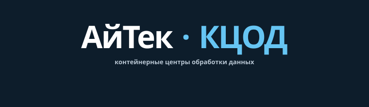
Инверсная версия: темные панели, спецодежда, презентационные обложки, ночные фото и навигация.
Производственная версия: полностью белая, одна строка без расшифровки. Для синего корпуса, гофрированной стены, трафаретной окраски и серийной маркировки.
Палитра сознательно короткая: три основных цвета и один служебный. Коды для печати (CMYK) и все технические детали - в разделе «Производство».
Все варианты показаны на фотореалистичных визуализациях типового морского контейнера с ребристой боковой стенкой и открытым блоком охлаждения. На гофре живут только крупные жирные надписи: мелкий текст и тонкие линии ломаются на гранях волны, поэтому их на стену не наносят. Обязательные правила для подрядчиков и дизайнеров - под примерами.
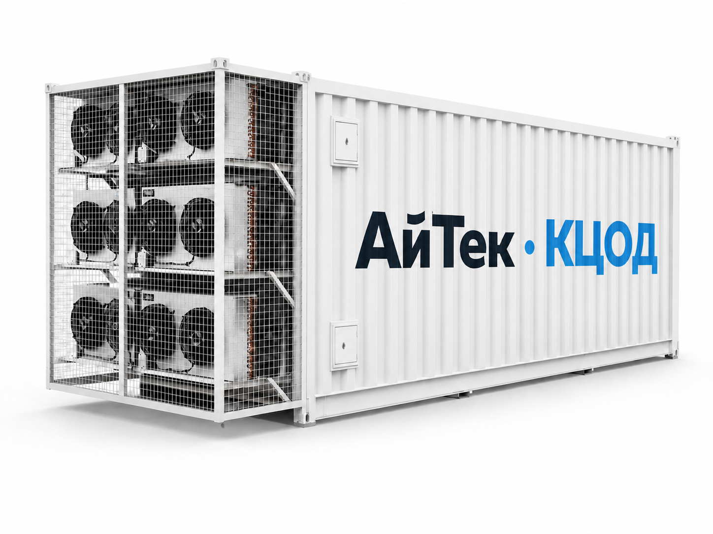
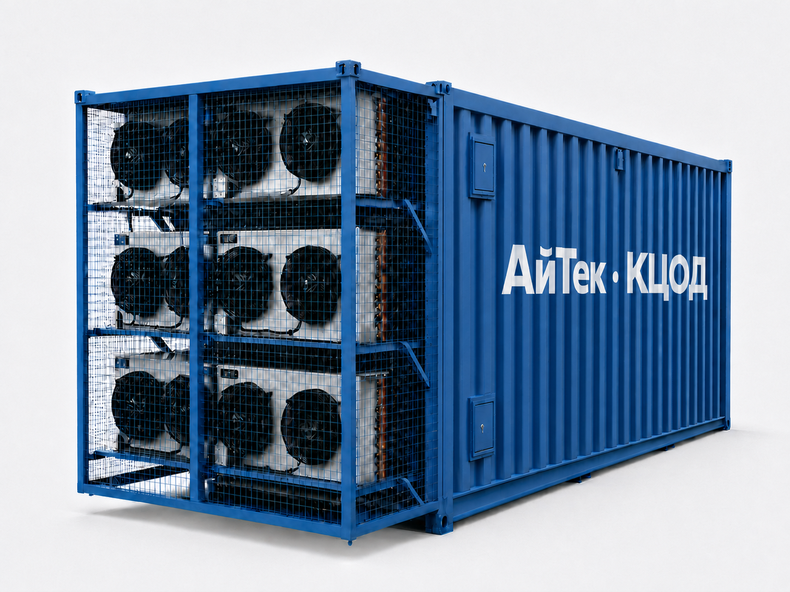
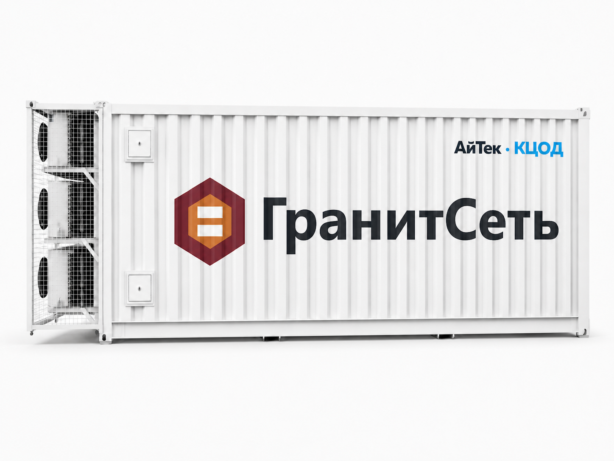
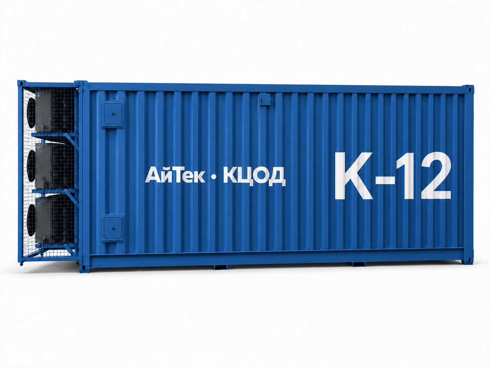
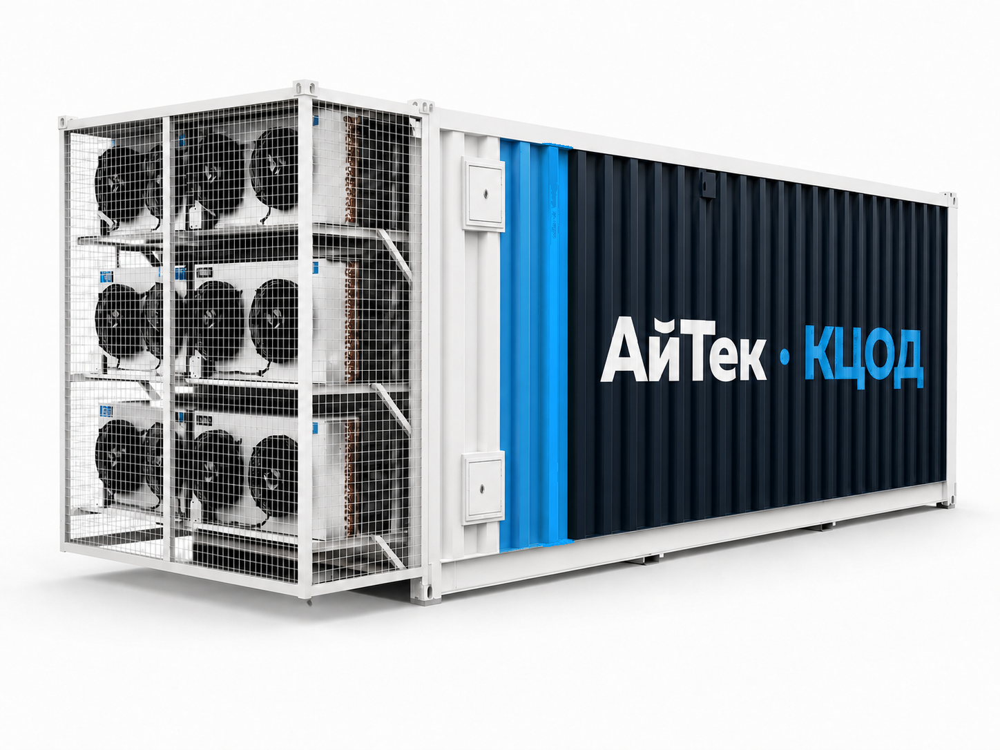
Одна волна гофры морского контейнера - около 28 см при глубине 3,6 см. Всё, что мельче волны, попадает на её наклонные грани и полосы тени: буквы ломаются, линии превращаются в зигзаг. Отсюда три группы требований к подрядчикам и дизайнерам.
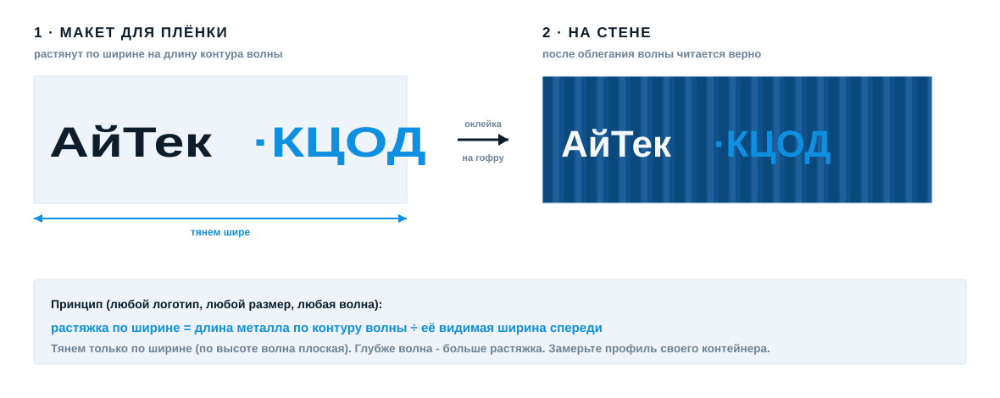
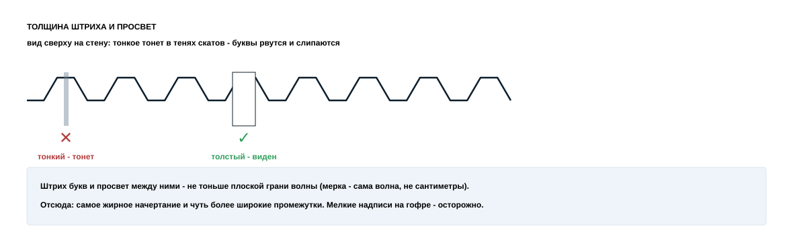
Логотип клиента (co-branding). Клиентский знак наносится в упрощенной версии для гофры: жирное начертание без засечек, эмблема без мелких деталей и элементов тоньше 5-7 см (одна грань волны), высота от двух волн. Версию для нанесения готовит и согласует дизайнер АйТек - оригинал клиента с тонкими штрихами и засечками на гофру не идет.
Технология: самоклеящаяся пленка или окраска по трафарету. Детальная графика и мелкая типографика на гофрированную стену не наносятся ни в каком виде.
Все, что нужно типографии, оклейщику и дизайнеру, чтобы воспроизвести знак без звонков и самодеятельности: шрифт, коды цветов для печати и краски, версии знака, охранное поле и запреты.
Знак и заголовки набраны шрифтом Muller: основная строка - начертание ExtraBold, подпись-расшифровка - Bold. Шрифт коммерческий: файлы начертаний вместе с макетами выдает владелец бренда (контакт ниже). Заменять похожими шрифтами нельзя.
Три версии: основная (графит + синий, светлый фон), инверсная (белая с голубым, темный фон) и производственная (полностью белая, одна строка без расшифровки - синий корпус, гофра, трафарет). Исходники в SVG и PNG для всех трех версий запрашиваются у владельца бренда - файлы из чужих рук не использовать.
Вокруг знака - свободная зона не меньше высоты буквы «А» со всех сторон: ни текста, ни рамок, ни других логотипов. Минимальная ширина полной версии с расшифровкой - 60 мм в печати и 220 px на экране; если места меньше - использовать строку без расшифровки (от 30 мм / 120 px).
Не растягивать и не сжимать по одной оси, не перекрашивать в другие цвета, не обводить контуром, не добавлять тень, не набирать имя другим шрифтом, не ставить на пестрое фото без спокойной подложки, не наносить расшифровку на гофрированную стену.
| Цвет | Экран (HEX) | Печать (CMYK) | Краска (RAL) | Применение |
|---|---|---|---|---|
| Белый | #FFFFFF | 0 · 0 · 0 · 0 | RAL 9016 | корпуса, фон документов, знак на темном и синем |
| АйТек графит | #0D1D2B | 70 · 33 · 0 · 83 | RAL 5004 | текст, «АйТек», темные панели |
| КЦОД синий | #0E8FE0 | 94 · 36 · 0 · 12 | RAL 5015 | «КЦОД», акценты графики и цифры |
| Сигнальный желтый | #F2A900 | 0 · 30 · 100 · 5 | RAL 1003 | сигнальная полоса, предупреждения |
| Корпус, темно-синий | #0E518D (ориентир) | - | RAL 5010 | краска синего корпуса контейнера |
CMYK указан ориентировочно - перед тиражом сверять по цветопробе. Исходники знака и шрифта выдает владелец бренда: ООО «АйТек», info@aitek.ru. Любой макет перед производством отправляется владельцу на согласование.
Система должна одинаково уверенно выглядеть в деловой коммуникации и в производственной среде. Ниже - базовые направления применения, которые можно развивать в отдельные макеты.
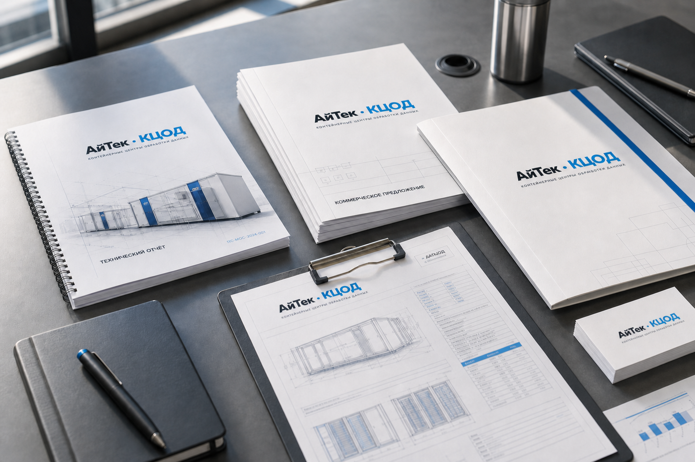
На документах логотип задает спокойный инженерный тон: без лишней декоративности, с понятной расшифровкой направления.
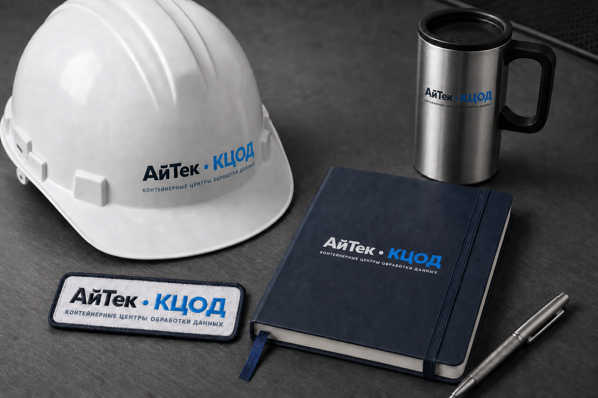
Мерч выглядит как часть инженерной команды, а не как случайная рекламная сувенирка.
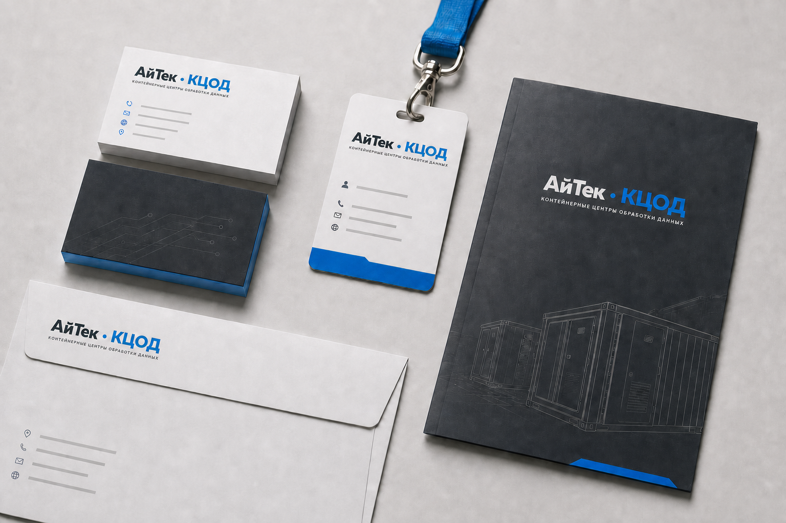
В малом размере важно сохранить первое чтение: АйТек как доверие, КЦОД как направление.
АйТек дает доверие. КЦОД называет продуктовую область. Подпись объясняет аббревиатуру. Система контейнерного брендинга показывает, как знак живет в реальной эксплуатации: от главного бренда до клиентского проекта.